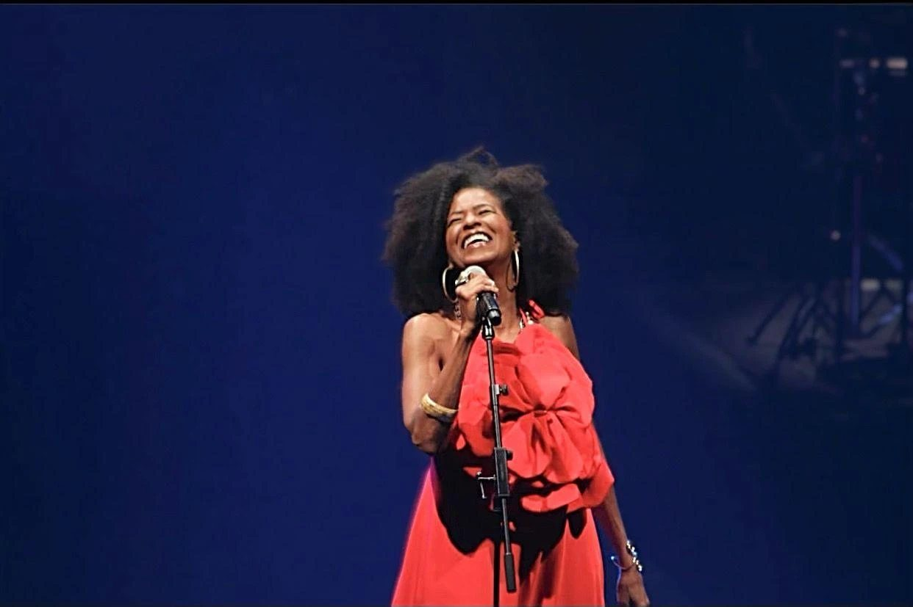
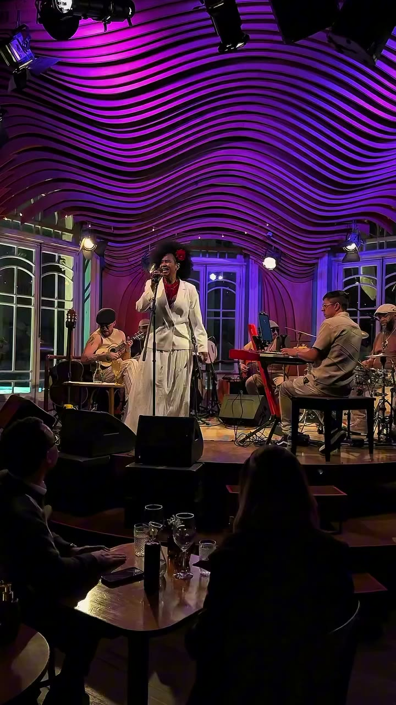
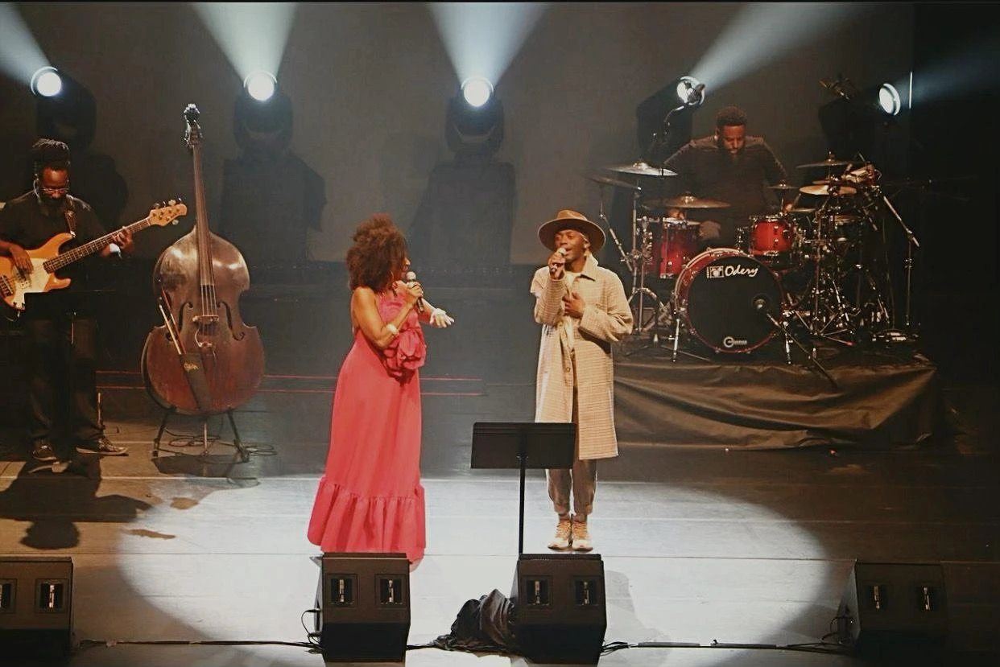
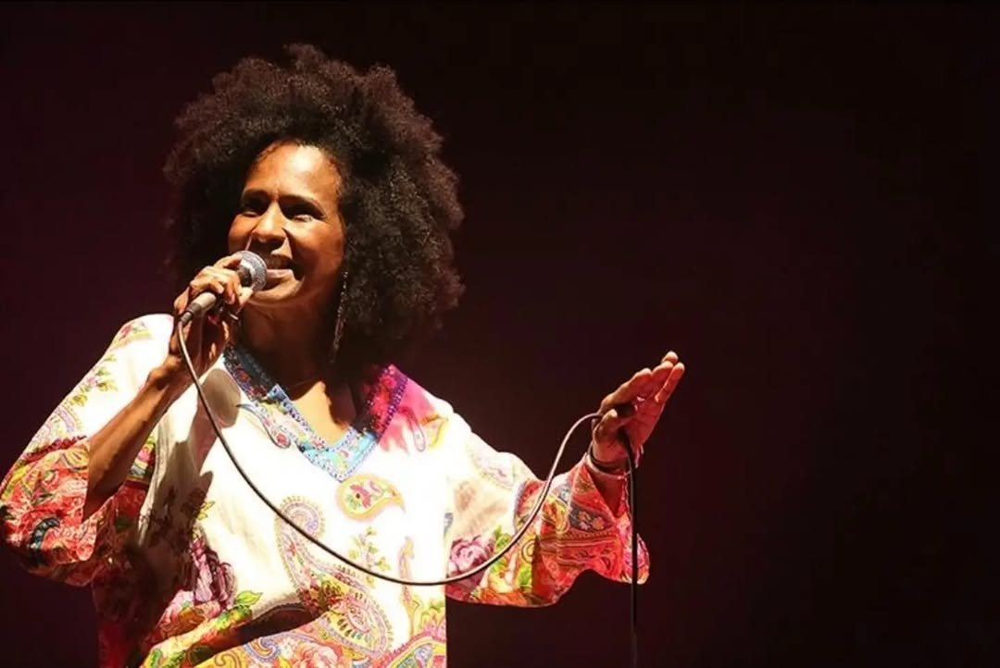
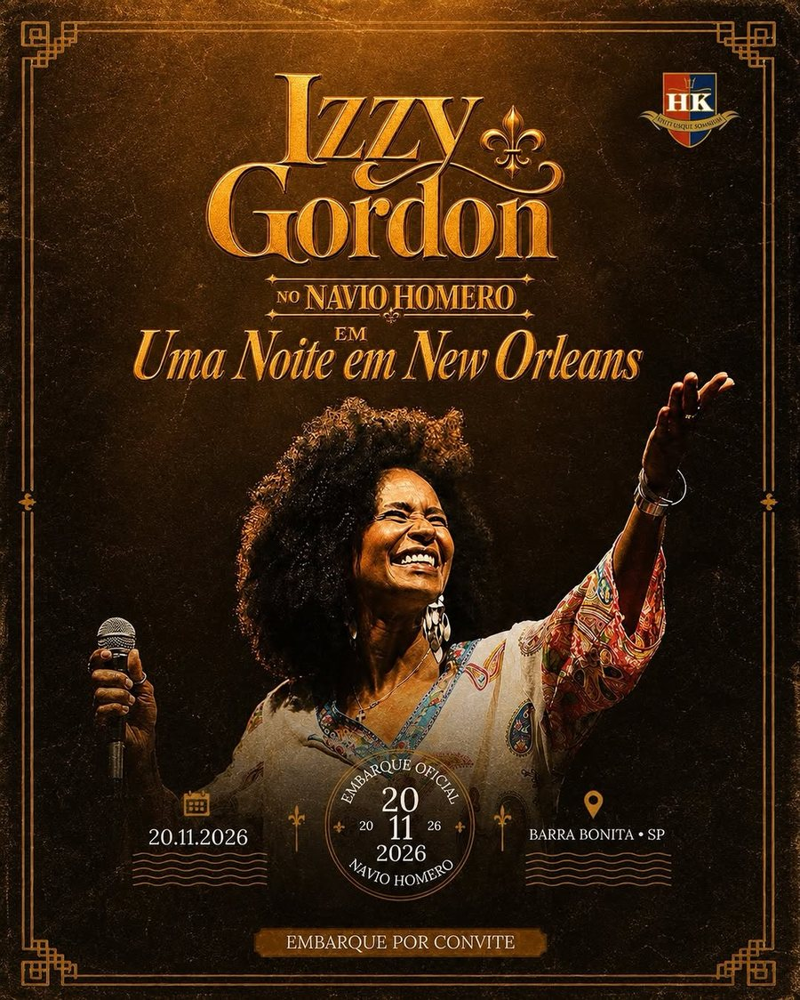

Filha de Dave Gordon, sobrinha de Dolores Duran
O pai é o cantor Dave Gordon, nascido na Guiana. A tia é Dolores Duran, cantora e compositora que Izzy homenageou logo no primeiro disco.

Cantora e compositora
SambaJazzSoul
#músicapretabrasileira
Samba, jazz e soul
com raiz preta.
Ancestralidade
Entre samba, memória e ancestralidade, Izzy reverencia as grandes escolas da música brasileira e imprime a sua voz em canções que atravessam gerações.
Sobre Sementes da Tamarineira
Raízes
Uma linhagem de cantores, um palco aberto desde cedo e três décadas espalhando samba, jazz e soul pelo país.
O pai é o cantor Dave Gordon, nascido na Guiana. A tia é Dolores Duran, cantora e compositora que Izzy homenageou logo no primeiro disco.
O talento de cantora se confirmou no musical dirigido por José Possi Neto.
Gravou com Jorge Ben Jor e saiu em turnê com ele. No mesmo fôlego eclético, fez backing vocal para o Deep Purple.
O primeiro álbum é uma homenagem à tia, a cantora e compositora Dolores Duran.
Projeto baseado na obra de alguns dos nossos maiores e mais expressivos compositores negros.
Mostrou toda a sua elegância em rede nacional.
Lançou Neguinha Sim, que um ano depois ganhou versão bilíngue com Kennedi Mack: Little Black Girl / Neguinha Sim!
Izzy Gordon canta Jorge Aragão. O primeiro volume de uma trilogia dedicada aos compositores do Cacique de Ramos.
Conhecer o álbumJá dividiu o palco com
Novo álbum
Izzy Gordon canta Jorge Aragão
Debaixo da tamarineira do Cacique de Ramos, gente como Fundo de Quintal e Jorge Aragão inventou um jeito de fazer samba. Izzy volta àquela sombra com arranjos que conversam com o jazz e com a tradição do samba.
Uma trilogia dos compositores do Cacique de Ramos
Vol. 1
Jorge Aragão
Germinou em 2026
Vol. 2
Arlindo Cruz
Em breve
Vol. 3
Luiz Carlos da Vila
Em breve
Show
Uma reverência a mulheres incríveis que abriram caminhos e mudaram tudo à sua volta.
Música
Toque numa capa para ouvir a prévia. O sol responde à voz dela.
Ao vivo
Festivais de jazz e blues, casas de samba, teatros. Izzy circula pelos melhores palcos do país.



Agenda
Próximo show
Navio Homero Krähenbühl · Píer 37, Barra Bonita, SP. Jazz ao vivo, culinária cajun e embarque exclusivo. Vagas limitadas.
Reservas no WhatsApp
Já passou
Discografia
Contratar
Monte o pedido aqui e ele chega pronto no WhatsApp da produção.